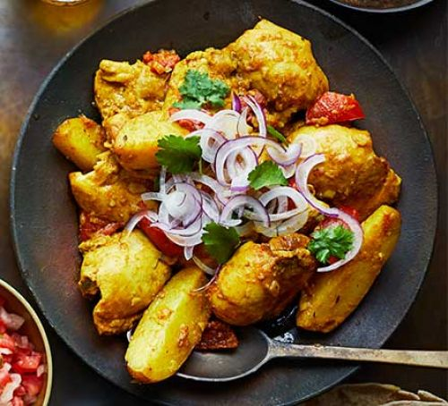

First Recipes

- Recipe has a :
- Description : Mauritian chicken curry
- Details
- Serving : Try this fragrant Mauritian chicken curry with potatoes. It's served with a spiced tomato side dish along with fluffy basmati rice and rotis
- Cooking Time: 30 MINS
- Allergy: No
- Special Ingredients:
- vegetable oil
- curry leaves
- garlic cloves
- List of ingredient:
- 2 tbsp vegetable oil
- 8 curry leaves, finely chopped
- 1 medium onion, finely chopped
- Instruction:
- Heat the oil in a large saucepan over a low-medium heat. Drop in the curry leaves, onion, garlic, ginger, cinnamon stick, chilli and thyme and cook for 5 mins until the onion has softened, stirring regularly to prevent sticking to the pan.
- Add the chopped tomatoes, potatoes and 1 tsp salt. Pour in water to just below the level of the chicken and potatoes. Cook for around 25 mins until the potatoes and chicken are cooked through, then discard the cinnamon stick.